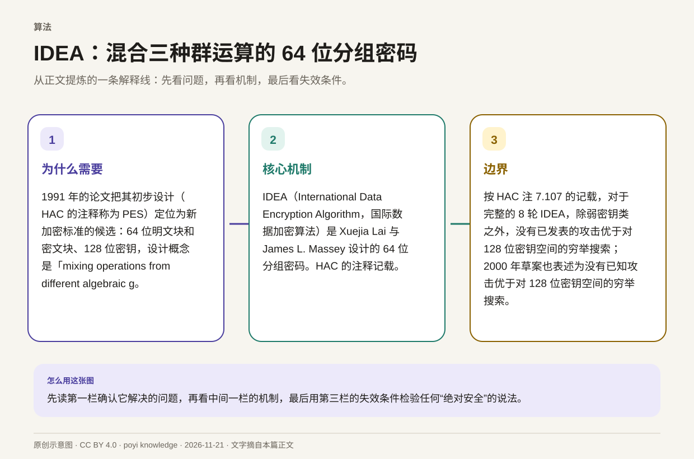
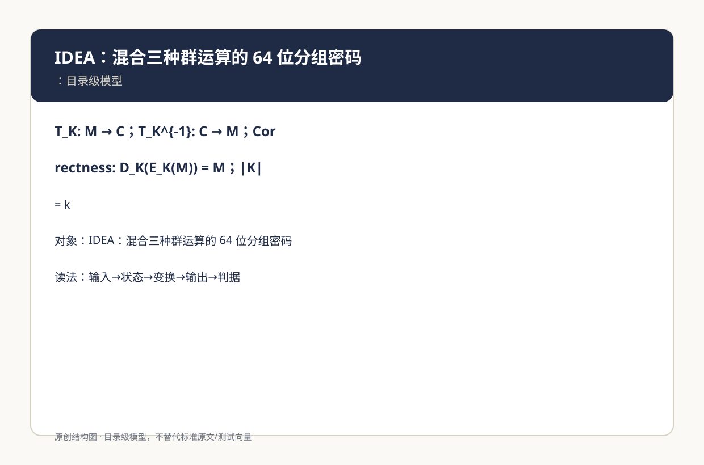

原理与机制
算法：IDEA 国际数据加密算法（International Data Encryption Algorithm）。IDEA（International Data Encryption Algorithm，国际数据加密算法）是 Xuejia Lai 与 James L.Massey 设计的 64 位分组密码。HAC 的注释记载，它的前身是 1990 年提出的 PES，经修改得到 IPES，后来以 IDEA 之名商业化；IETF 草案把 Lai 1992 年的学位论文《On the design and security of block ciphers》列为 IDEA 的参考文献；HAC 称其为主参考（primary reference）。HAC 把 IDEA 描述为「Based in part on a novel generalization of the Feistel structure」（部分基于 Feistel 结构的一种新推广）：64 位明文被分成四个 16 位字 X1、X2、X3、X4，每一轮四个字都参与运算，因此它不是只更新一半的经典 Feistel 网络；HAC 把轮内的乘加混合部件称为 MA 结构。IDEA 使用 128 位密钥，导出 52 个 16 位子密钥：8 轮各 6 个，输出变换 4 个。HAC 强调，IDEA 的设计核心是在 16 位子块上混合三种不同代数群的运算：
- 按位异或 ⊕；
- 模 2^16 加法 +；
- 模 2^16+1 乘法 ⊗，其中 0 代表 2^16（65536），结果若为 2^16 则写回 0。每一轮先做四次键控运算，再用 MA 结构混合：
X1 = X1 ⊗ K1
X4 = X4 ⊗ K4
X2 = X2 + K2
X3 = X3 + K3
t0 = K5 ⊗ (X1 ⊕ X3)
t1 = K6 ⊗ (t0 + (X2 ⊕ X4))
t2 = t0 + t1
X1 = X1 ⊕ t1
X4 = X4 ⊕ t2
a = X2 ⊕ t2
X2 = X3 ⊕ t1
X3 = a
第 8 轮之后是输出变换，它只使用乘法和加法：
Y1 = X1 ⊗ K(9)1
Y4 = X4 ⊗ K(9)4
Y2 = X3 + K(9)2
Y3 = X2 + K(9)3
密钥扩展（key schedule）把 128 位密钥按大端顺序分成 8 个 16 位字，直接作为前 8 个子密钥；随后把整个 128 位密钥循环左移 25 位，再分成 8 个字，作为下一组子密钥；重复这一过程，直到 52 个子密钥全部分配完毕。HAC 的表 7.12 列出了本示例每一轮使用的子密钥。解密与加密使用同一套轮结构，但要用加密子密钥导出解密子密钥。按 HAC 表 7.11，第 1 轮使用输出变换子密钥 K(9)1..K(9)4 的逆元，K5、K6 取自第 8 轮；第 2 到第 8 轮使用第 10-r 轮加密子密钥 K1..K4 的逆元，但 K2 和 K3 的加法逆元要交换位置，K5、K6 取自第 9-r 轮；最后一轮使用第 1 轮 K1..K4 的逆元。其中 K1、K4 取模 2^16+1 的乘法逆元，K2、K3 取模 2^16 的加法逆元。由于 0 在乘法中代表 2^16，而 2^16 是自身的乘法逆元，所以 0 的乘法逆元定义为 0。

为什么重要
1991 年的论文把其初步设计（HAC 的注释称为 PES）定位为新加密标准的候选：64 位明文块和密文块、128 位密钥，设计概念是「mixing operations from different algebraic groups」（混合不同代数群的运算），目标是提供混淆与扩散，并便于硬件和软件实现。HAC 记载 IDEA 是修改后的 IPES 商业化版本；HAC 对 IDEA 的描述同样以三种群运算的混合为核心。本文分析认为，IDEA 与 DES 的差别不只是把位级置换换成更大的表，而是让异或、模 2^16 加法和模 2^16+1 乘法交替作用；这三种运算来自结构不同的代数系统，HAC 认为它们的代数不兼容性正是设计的关键。HAC 的注释还指出，MA 结构使 IDEA 在一轮之后即达到「complete」（完备）：每个输出位都依赖每个输入位。这个性质说明设计者追求的是快速扩散，而不是依赖很多相同的轮来慢慢累积。IDEA 的差分分析历史也是设计动机的一部分。HAC 记载，早期版本 PES 被 Lai、Massey 与 Murphy 的广义差分分析攻破，但攻击需要全部 2^64 个密文；随后的修改包括交换受 K2、K4 控制的群运算、改变每级之后的 16 位置换，以及只修改解密密钥表。修改后的版本称为 IPES，后来以 IDEA 之名商业化。IETF 草案也把 IDEA 描述为「particularly strengthened to protect against differential cryptoanalysis attacks」（特别加强以抵抗差分密码分析攻击；cryptoanalysis 是草案的原始拼写）。IETF 草案把 IDEA 描述为瑞士联邦理工学院与 Ascom 的联合项目，目标是开发一种可以替代 DES 的强加密算法。这里 DES 是历史动机和替代目标，不是 IDEA 的组成部件；因此本文不把 DES 当作学习 IDEA 的必修前置，DES 只在历史脉络中出现。
应用与实例
2000 年的 Internet-Draft draft-ietf-smime-idea-07 建议把 IDEA 用于 CMS/S/MIME：密钥长度固定为 128 位，内容加密推荐 CBC 模式，初始化向量为 8 字节，并定义了内容加密与密钥包装的 OID 和两遍 CBC 的密钥包装流程。该草案已经过期，本文只把它当作当时的标准化提案，不声称它已经被广泛部署。HAC 例 7.106 给出一个完整的加密样本：
K = 0001 0002 0003 0004 0005 0006 0007 0008
M = 0000 0001 0002 0003
C = 11fb ed2b 0198 6de5
表 7.12 还列出每一轮的 6 个子密钥和该轮结束后的四个 16 位字。第 1 轮结束后的状态是 00f0 00f5 010a 0105，第 8 轮结束后是 0a24 0098 ec6b 4925，输出变换使用子密钥 0080 00c0 0100 0140。本文的验证脚本逐项复算了这些中间值，而不只是检查最后密文。GnuPG 1.4 的 IDEA 自检提供 11 组已知答案向量。第一组就是上面的 HAC 样本；第 8 到第 11 组使用不同的 128 位密钥，因而也覆盖了密钥扩展的不同输入。本文对这 11 组都执行加密，并把密文解密回原明文。IDEA 本身只定义分组密码，不定义工作模式、填充、IV 管理或消息认证。把 IDEA 用于实际数据时，模式和协议必须负责 IV、填充和完整性；CBC 草案中的 8 字节 IV 是模式层的约定，不是 IDEA 分组算法的一部分。

边界与攻击面
按 HAC 注 7.107 的记载，对于完整的 8 轮 IDEA，除弱密钥类之外，没有已发表的攻击优于对 128 位密钥空间的穷举搜索；2000 年草案也表述为没有已知攻击优于对 128 位密钥空间的穷举搜索。HAC 认为 IDEA 的安全性只受相对较小的 64 位块长限制。这些判断是上述来源在各自写作时的结论，本文不把它们推广成对今天所有攻击的永久保证。HAC 的注释详细记录了 Daemen 发现的弱密钥类：最大一类包含 2^51 个密钥，可以用两次加密加少量计算判断成员关系，然后用 16 个选择明文差分、约 2^16 次群运算和约 2^17 次密钥搜索加密恢复密钥；随机密钥落入该类的概率是 2^-77。Lai 更早观察到较小的弱密钥块，Meier 的分析没有发现对完整 8 轮 IDEA 可行的攻击，并支持 Lai 的结论：IDEA 在 8 轮中的 4 轮之后似乎已能抵抗差分分析（HAC 原文用「appears」）。对这些具体数字，本文按 HAC 的叙述保留其模型和条件，不把它们简化成 IDEA 已被攻破或 IDEA 绝对安全。64 位块长带来另一个边界。HAC 注 7.8 说明，块长 n 较小时，约 2^(n/2) 个块后就可能出现匹配；对 IDEA 的 n=64，生日碰撞尺度约为 2^32 个块。本文据此认为同一密钥下可安全处理的数据量有限，但这是通用生日分析，不是 IDEA 专属的 2^32 定理。HAC 注 7.107 也只把 64 位块长列为安全性边界。实现层面，模 2^16+1 乘法通常需要 32 位中间结果和条件修正，或用查表实现；这些操作在普通软件中不是常量时间。本文的教学实现直接使用 JavaScript 的整数和 BigInt，不保证常量时间，也不测试缓存、时序或故障注入等侧信道。IDEA 也不提供完整性：翻转密文会改变对应明文，但分组密码本身无法检测，完整性需要 AEAD 或加密后再 MAC。
历史与背景
IDEA 的前身是 Lai 与 Massey 在 1990 年提出的 PES。1991 年的论文《A Proposal for a New Block Encryption Standard》发表在 EUROCRYPT '90 会议论文集（LNCS 473，第 389–404 页）；HAC 的注释把这篇论文的初步设计称为 PES，而不是 IDEA。PES 被广义差分分析攻破后，经过交换群运算、改变级间置换和修改解密密钥表，得到 IPES，并最终以 IDEA 之名商业化。IETF 草案把 Lai 1992 年的学位论文《On the design and security of block ciphers》（ETH Series in Information Processing 第 1 卷，Hartung-Gorre Verlag）列为 IDEA 的参考文献；HAC 称其为主参考。IETF 草案附录 C 记载，Ascom 持有 IDEA 专利，并按 IETF 的知识产权程序提供非独占许可；草案还说明非商业用途免费。GnuPG 1.4 的源码头注释记录了相关专利的到期日期：欧洲 EP0482154 与日本 JP3225440 于 2011-05-16 到期，美国 5,214,703 于 2012-01-07 到期。本文把专利状态写成这些来源记录的历史信息，不据此给出法律意见。本文的 IDEA 实体指 1990 年 PES 设计经修改为 IPES 后、以 IDEA 之名商业化的 8 轮 64 位分组密码；1991 年论文是 PES 的文献，1992 年学位论文是 IDEA 的主参考。PES 是它的前身，DES 是它试图替代的对象，AES 和工作模式是另外的实体。把它们合并成一个条目会混淆身份和范围，因此本文只做上下文链接，不做别名或合并。
逐步示例与核验
复算示例
取标准或公开测试向量中的一组参数，按“输入—执行—输出”记录：先写出该条目的形式式 (C=E_K(P;r),\qquad P=D_K(C))；再按规范顺序执行每一步，最后把输出与独立实现或标准向量逐字节对照。若没有可引用的数值向量，就只记录结构步骤，不伪造输出。
参考出处
- Wikipedia search entry for IDEA 国际数据加密算法. https://zh.wikipedia.org/w/index.php?search=IDEA%20%E5%9B%BD%E9%99%85%E6%95%B0%E6%8D%AE%E5%8A%A0%E5%AF%86%E7%AE%97%E6%B3%95
- Handbook of Applied Cryptography (Menezes, van Oorschot, Vanstone). https://www.cacr.math.uwaterloo.ca/hac/